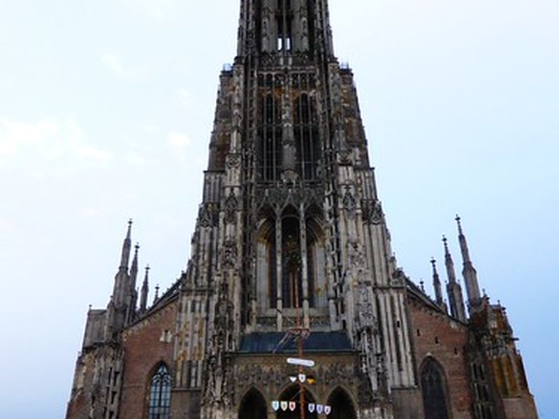
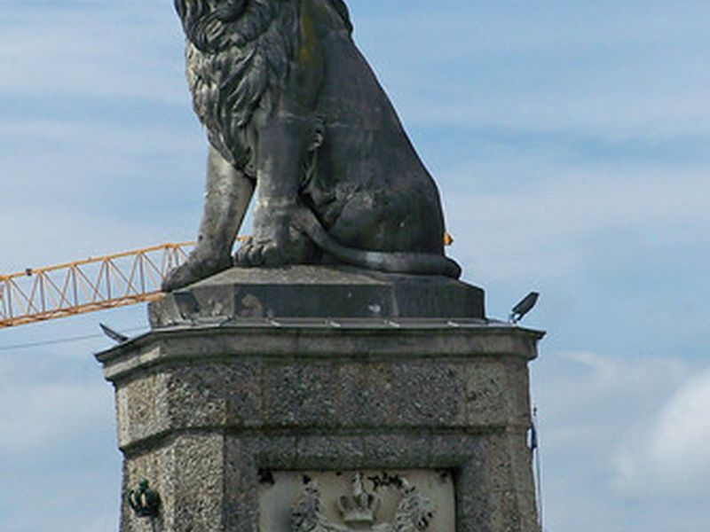
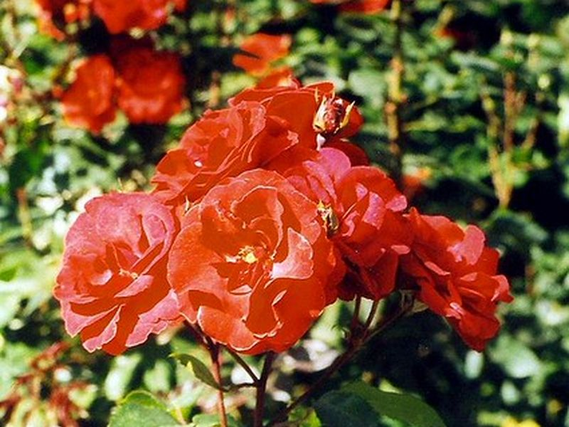
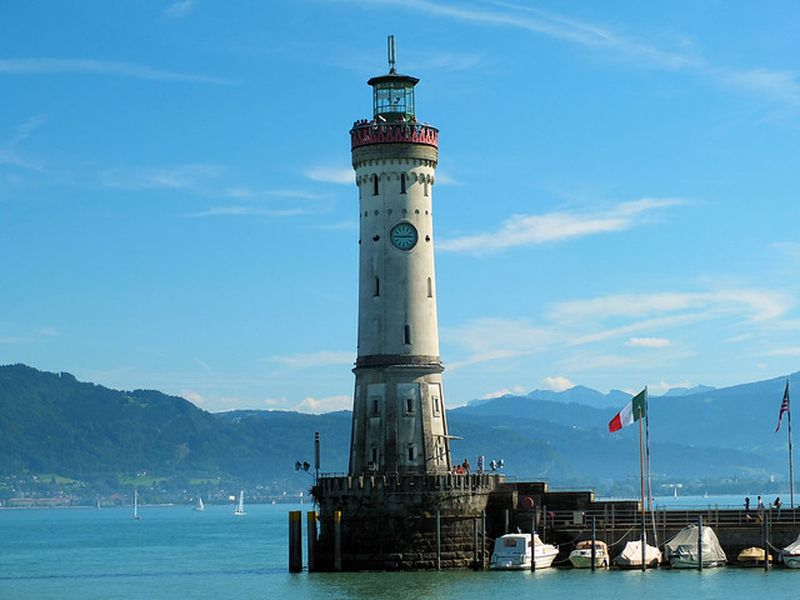
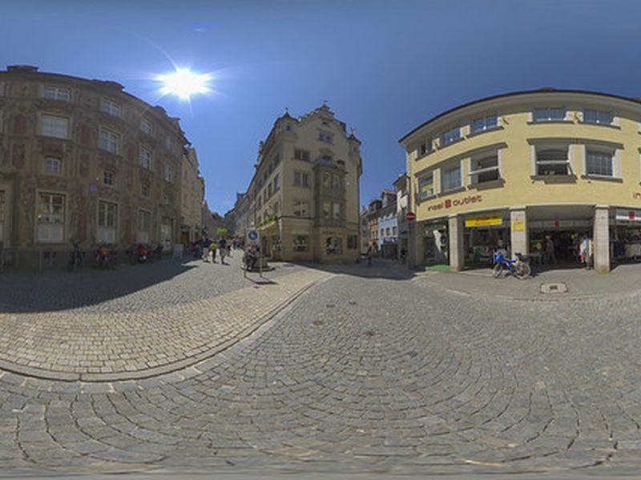
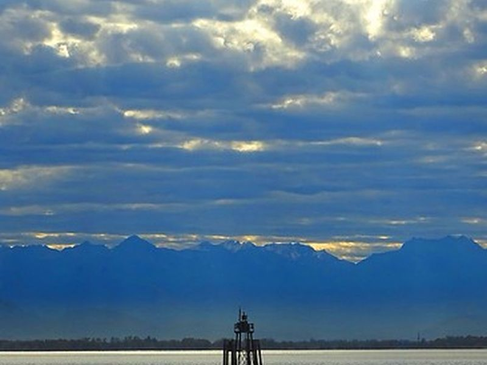

Explore Lindau
A Brief History
Lindau occupies an island and lakeshore on the eastern end of Lake Constance where Bavaria meets Austria and Switzerland. Its harbor entrance carries a Bavarian lion and lighthouse. Medieval lanes and a Gothic town hall reflect membership in the Holy Roman Empire. Lindau joined Bavaria in 1802. Steamers and rail links connected the town to regional markets in the 19th century. Today it serves as a county seat and ferry port.
Attractions Map
Top Sights & Activities

Minster of Our Lady (Münster Unserer Lieben Frau)
While its origins date back to 810, the Minster of Our Lady in Lindau was built between 1748 and 1752 after a huge fire in the town. It was destroyed again in 1922 by fire. but rebuilt.

Bavarian Lion Statue
The Bavarian Lion Statue stands as a majestic symbol of strength and pride at the entrance of Lindau’s harbor, commanding attention and admiration from all who visit. This impressive sculpture is not only a work of art; it is a piece of Bavarian history and identity. Built in the 19th century, the lion overlooks the lake, symbolizing the power and authority of Bavaria.

Seepromenade
The Seepromenade in Lindau is not just a simple walkway beside the water; it’s a picturesque escape that encapsulates the serene beauty and vibrant culture of this Bavarian island city. This promenade is deserving of its place on the list of top things to do in Lindau because it offers fantastic views of Lake Constance and the Alps, providing a tranquil setting for both relaxation and reflection. Along the Seepromenade, you can indulge in the local cuisine at various cafes and restaurants, engag

Lindau Lighthouse
The Lindau Lighthouse, standing proudly at the entrance to the Lindau harbor, is more than just a navigational aid; it’s a historical monument that offers a glimpse into the past and views of Lake Constance and the surrounding mountains. Built in the 1850s, it is notably the southernmost lighthouse in Germany and houses a clock visible from the city. The reason for its inclusion on this list is not only because of its distinctive architectural beauty but also for the opportunity i...

Lindau City Museum (Stadtmuseum)
The Lindau City Museum, or Stadtmuseum, is a treasure trove of art, culture, and history, offering you a comprehensive journey through the ages of this island city. Located in a beautifully preserved historic building, the museum’s collections range from prehistoric artifacts to contemporary art, showcasing the rich cultural heritage of Lindau and the surrounding region. Its inclusion on the list is well-earned for the museum’s role in preserving and presenting the city’s history in an engaging

Lake Constance
Taking a boat tour across the shimmering expanses of Lake Constance is an that seamlessly blends natural beauty with the tranquil elegance of boating. This vast lake, bordered by Germany, Austria, and Switzerland, offers a unique vantage point to appreciate the diverse landscapes and the snow-capped Alps on the horizon. You have many choices ranging from short excursions to day-long voyages, each providing a different perspective of the lake’s serene beauty.